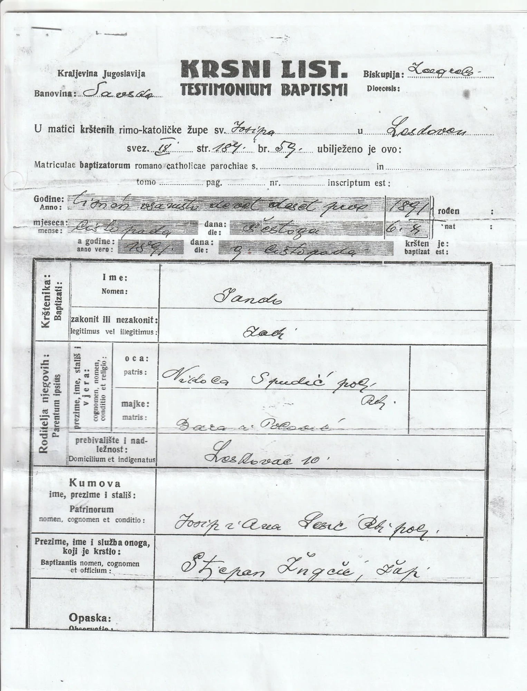
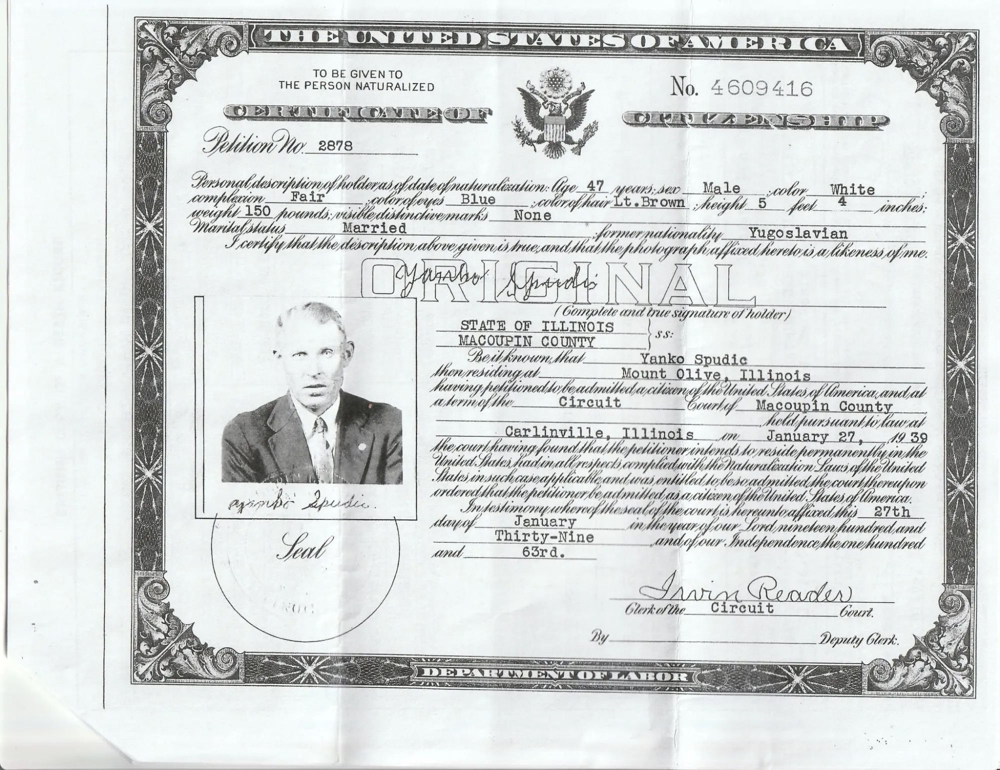

Janko Spudić (1891–1957) and the four siblings nobody named
Asked in a family-history group by a great-grandchild of Janko: who were the four brothers and sisters his obituary said he outlived? This page is a living, honest account of what his own documents confirm, what they contradict, and where those four names will actually be found. Last updated 17 October 2026.
The original request
Trying to locate the name of my great-grandfather’s four siblings. His name was Janko Spudic (1891-1957). Just found out his parents were Stephen Spudic and Dora Polovich. I don’t have birth/death dates on them. Janko’s obituary mentioned that he had outlived four siblings, but he never spoke of them. Is somebody here related to any of these folks?Post in a family-history Facebook group, as relayed. The poster appears to be the Eric Spudic who replies below, but the thread does not say so outright.
| Asked for | The names of Janko’s four siblings. Nothing in the request rules out writing to archives or parishes. |
|---|---|
| In hand | A baptismal certificate (1931 copy of the 1891 entry), a 1939 naturalization certificate, a 1957 Illinois death record, and Janko’s obituary (the requester’s copy is not yet on this page; an index of a Springfield newspaper obituary of 26 Nov 1957 is described below). |
| Parents, as given | Stephen Spudic and Dora Polovich (from the death record). |
| Place | Leskovac, Yugoslavia, on the death record; Leskovac Barilovićki in Croatia today. |
| Not known | The siblings’ names, birth places or dates, or whether any left Croatia. |
What Janko’s own documents say
Three documents, read directly from the scans supplied. Everything later on this page is checked against them. The most useful one is the oldest, and it disagrees with the newest.
1. Baptismal certificate (Krsni list), issued 12 October 1931

| Form | Kraljevina Jugoslavija, Banovina Savska, Biskupija (diocese) Zagrebačka. It is an extract from the parish baptism register, not the register itself. |
|---|---|
| Parish | Roman Catholic parish of sv. Josipa (St Joseph), Leskovac. |
| Register reference | Volume (svez.) read as 18, page 184, entry no. 59. The volume number is the least legible figure on the form. |
| Child | Janko, legitimate (zakonit). Born the 6th of October 1891 (šestoga listopada); baptized 9 October 1891. |
| Father | Vid(o) Spudić, farmer (polj.), Roman Catholic (Rkt.). The last letters of the first name are a flourish: Vido or Vid either way, and not Stjepan. |
| Mother | Dora (written “Dara”), née Polović (r. Polović). |
| Domicile | Leskovac 10: the house number is the single most useful search key on this page. |
| Godparents | Josip and Ana, surname read as Šerić or Lesić (uncertain), farmers. Kumovi were usually kin or close neighbours, so they are a lead in their own right. |
| Baptized by | Parish priest Stjepan (surname read as Žugčić; uncertain). A priest named Stjepan on this certificate is a coincidence worth noticing and nothing more. |
2. Certificate of Citizenship, 27 January 1939

| Name used | Yanko Spudic, residing at Mount Olive, Illinois. |
|---|---|
| Description | Age 47, male, fair complexion, blue eyes, light-brown hair, 5 ft 4 in, 150 lb, married. Former nationality: Yugoslavian. |
| Why it matters | Age 47 in January 1939 agrees with a birth in October 1891. Petition no. 2878 is the underlying court file: such files usually record the arrival ship and date, the wife’s name and the children, and sometimes the previous residence. That file has not been seen. |
3. Illinois death record, 25 November 1957
| Name | John Spudic, Sr., 511 East Main Street, Mt. Olive. Retired coal miner. |
|---|---|
| Born / died | 6 October 1891, “Leskovac, Yugoslavia” · 25 November 1957, coronary thrombosis, age 66. |
| Father / mother | “Stephen Spudic” · “Dora Polovich” (maiden name). |
| Informant | John J. Spudic Jr., 804 E. Main St., Mt. Olive: son. A son gave his grandparents’ names thirty-plus years after a first-generation immigrant who “never spoke of” his family had passed them on. |
| Burial | 27 November 1957, Calvary Cemetery, Mt. Olive. Becker & Son Funeral Home. Coroner John Ferketich; certified copy issued 4 February 1971. |
| Left out here | The record includes a Social Security number. It is deliberately not reproduced on this page, and the scan is not published. |
The 1891 baptismal entry says the father was Vid(o). The 1957 death record, filled in by a son, says Stephen. The baptismal entry is the earlier and firsthand record, so Vid is the name to search first. This page does not claim that Stephen is wrong. Three explanations fit, and none is confirmed: (a) the informant had the name wrong; (b) Stephen is Janko’s grandfather or another relative and the name slipped a generation; (c) a patronymic: Vid Stjepanov, Vid son of Stjepan. Local surname lists in this parish carry house-names built exactly that way (Spudić Grgin, Markov, Matkov). Searching Croatian registers for a “Stephen Spudić” with a wife Dora would very likely find nothing, and the absence would mean nothing.
What the replies in the thread add
Each reply is checked against what could be found independently. A reply is a lead until a record backs it.
| Who | What they said | What this page makes of it |
|---|---|---|
| Ivan Šutej, Fiorela Jakovcic | Records are only at the registrar’s office in Croatia; the Leskovac parish office should have the family. | Both are right, for different years. The 1931 certificate proves the parish held the 1891 book then; since the 1946 law, post-1860 registers sit with the civil registry (matični ured). See the section on where the records are. |
| Robin Schmidt | Grew up with a Spudic family in Illinois: a John Spudic, born about 1920, and his son Joseph; offers to reach out. | Fits Janko’s son: the 1930 census has a son John aged 7 (born about 1922–23) in his household, and the 1957 informant was John Jr. Unverified, but close. It is also an offer of a way in to living family, and one worth taking up through the requester. |
| Karen Curlovic | An Ancestry tree has Janko and Polovich names blurred; no sibling names are blurred. A “Vid,” born 8 Jan 1828 at Leskovac, with a son Mijo Josip “Michael” and a Mary Movre (1863–1931). A Barbara Spudic who wrote to her grandfather; the name became Spudich. | The Vid matches the 1891 entry, which supports Vid over Stephen. But a Vid born 1828 would have been 63 when Janko was born, so he may be the grandfather, or two different Vids are tangled. The date is written ambiguously in the post and the tree is paywalled. Unconfirmed. |
| Eric Spudic | Researched a Barbara Spudic (formerly Polovich), who ended up near St. Louis, and believes her to be Janko’s aunt; her son Marco died young and is buried at Mt. Olive. Census records show Janko using Spudich for a few decades, then Spudic again. | Confirmed on the key point. An Illinois death certificate for “Marco Spudich,” Mount Olive, 28 Aug 1930, names his parents as Nic Spudich and Barbara Polovich. So Eric’s Barbara was born a Polović, which resolves the disagreement with Karen, who thought her maiden name was Spudic. Whether Barbara and Dora were sisters is still untested. Marco is therefore a cousin, not one of the four siblings (see below). |
| Karen Curlovic (again) | Ivan John Spudic (1883–1985) married Barbara Paur; 10–11 children, mostly at Sawyerville and Benld. Two sons named Stephen, but “not your Stephen.” | Ivan John died in 1985, so he cannot be one of four siblings who died before Janko. He could be a cousin, or an unlisted sibling. The Paur line is a separate family-tree branch to keep apart from Janko’s. |
The spine
Confirmed means a document in hand says it. Everything else stays dashed.
Note that a “sibling” in an obituary may include children who died as infants or in childhood in Croatia, and Janko may never have known them. If so, they will appear in the Leskovac death register, not in any American record. The parish enquiry below asks for deaths as well as births for that reason.
Found: Janko’s household in the American records
Read on FamilySearch on 17 October 2026, through the requester’s own signed-in session. These are indexes: the transcription of a name can be wrong, and one is.
| 1930 census, Mount Olive | Head of household indexed as “Marko Spudich”, age 39, born Yugoslavia, married. With him: wife Anna, 25, born Illinois; son John, 7; daughter Rose Mary, 4; son William T., 0 days. This is Janko (see the name trap below), not the cousin Marco who died that August. |
|---|---|
| 1940 and 1950 censuses | John Spudich (1940) and John Spudic Sr. (1950), Mount Olive, wife Anna (C.), son William Thomas. Age given as 1892 in both. |
| Obituary, 26 Nov 1957 | Daily Illinois State Journal, Springfield. Indexed as John Spudic Sr., age 66, born Yugoslavia, died 25 November 1957. Survivors named: wife Anna; sons John Jr. and William; daughter Mrs. Rose Marie Celix. Officiant: Rev. Elmer Sanders. No siblings are named in the index. The obituary page itself is on GenealogyBank, a paid third-party site that I did not enter. “Outlived four siblings” may be in its full text, or may be in the Mount Olive paper’s notice that the requester holds. |
| Anna’s own obituary | Anna Catherine Spudic, born 1904/05, died 11 April 1990 at Litchfield; children John Jr., Rose (Celi) and William. Obituary printed in Springfield. |
| Arrival, 1913 (probable) | Ellis Island index: Janko Spudic, age 24, single, of Leskovac, “Hungary, Croatian”; arrived 22 April 1913 on the President Lincoln, sailing from Hamburg (manifest page 116, series T715, film T715-2057). The index names two other people on the line: a father, “Janko Spudic”, and a brother, “Marko Spudic.” Read with care: the age is two or three years off Janko’s 1891 birth, though manifest ages often are; the father is given the traveller’s own first name, which looks like an indexing slip (the 1891 baptism says Vid); and which of the two named men is the nearest relative at home and which the person he was joining is not shown by the index. I could not read the manifest image legibly in the viewer. The index record. |
| Not found | His marriage record and his naturalization petition no. 2878, in the indexes searched. Other Spudić arrivals from Leskovac turned up (Ivan, 15, in 1904; Iwan, 18, in 1912, with a father Stefan) but none is tied to Janko. |
Found: the Spudic burials at Calvary Cemetery, Mount Olive, sorted
Macoupin County’s ILGenWeb volunteers transcribed Calvary Cemetery; its R–S page lists thirteen Spudic or Spudick burials, each with a photograph of the stone. Years are as carved. I first took several of these for possible siblings. The census and death records say otherwise: none of the thirteen is a sibling of Janko.
| Name on stone | Years | Whose they are | Basis |
|---|---|---|---|
| John Sr. & Anna C. | 1891–1957 · 1904–1990 | Janko and his wife. | Stone, 1957 death record, censuses. |
| Marko · Mary | 1888–1930 · 1893–1927 | Marco Spudich and his wife Mary. Marco’s parents were Nic Spudich and Barbara Polovich: a cousin, probably, not a brother. | Illinois death certificate, 28 Aug 1930: born 8 Mar 1886 in Croatia, spouse Mary, buried the same day. (The stone says 1888; the certificate says 1886. The record is on FamilySearch.) |
| Thomas · Catherine, and Catherine, Barbara, Josephine | 1867–1922 · 1876–1924 · 1906–25 · 1910–35 · —–1920 | One household: Tom Spudic and his wife Catherine and their children. | 1920 census, Mount Olive: Tom (born about 1862, Austria) and Catherine (about 1881) with twelve children, among them Katie (1906), Barba (1911), Josephine, Mary, Anna (1904), Joe, Ella. A Barbara Spudic, 25, died in Chicago on 11 Feb 1935, with a Springfield obituary. The stone and census years differ by a few years. |
| Anna Spudick · Ella · John Joseph · George C. | 1882–1968 · 1918–20 · 1919–97 · 1923–45 | A separate household: John Spudick (born 1882) and his wife Anna. Their children include John Joseph (Tec 5, WWII) and George C. (Cpl, killed 1945). | 1910, 1920 and 1930 censuses, Mount Olive. A 1910 index entry names John’s parents as George and Barbara Spudick, which I have not checked and which may or may not be Eric’s Barbara. Not Janko’s son: Janko’s John was born about 1922–23. |
So the four siblings are probably not in Mount Olive’s cemetery at all. They are more likely to have died in Croatia, perhaps young, or to have lived and died elsewhere under another spelling.
Where the siblings’ names will actually be found
The parish and civil registers at Leskovac
Janko’s siblings were presumably born in the same house, Leskovac 10, between roughly 1875 and 1905. Their baptisms were entered in the same parish baptism registers as Janko’s, in the volumes around page 184 of whichever volume he is in. Two rules govern how to get at them:
- FamilySearch will not have them. The Record Atlas lists one FamilySearch volume for the parish: births 1832–1857, marriages 1832–1857, deaths 1782–1857 (waypoint 9R2M-YW1). That is a generation before Janko. It matters only for the parents’ side: a Vid born 1832 or later would have his own baptism there, and so would his brothers and sisters. It cannot show Janko’s siblings, because they were born after it ends.
- After 1860 the books went to the registry office. The 1946 State Registers Act sent registers from 1860 onward to the civil registry offices (matični uredi); only entries up to 1860 went to the state archives. The catalogue of the Croatian State Archives (HDA) lists Leskovac Barilovićki only for 1782–1857. A nil in the archive catalogue for 1891 therefore says nothing about whether the book survives. It is at the registry office or the parish.
- The 1931 certificate proves the parish itself still held the 1891 book in 1931, signed by its priest. Both parish and registry office are worth asking, which is what the two replies in the thread were saying.
- Leskovac lay in the Military Frontier (Vojna krajina) until its dissolution in 1881; after that its records file like any Croatia-Slavonia parish. That affects the pre-1881 generation only.
I could not find a published address, email or phone number for the Leskovac parish office or for the registry office that covers Barilović, and have not invented one. The two enquiries below say who to ask and what to ask for; the requester or a Croatian-speaking relative will need to look up the current contact through the diocese’s parish directory or the municipality of Barilović.
The surname locally
Spudić is overwhelmingly a Leskovac Barilovićki name: the Croatian surname survey on Acta Croatica reports about 420 bearers in Croatia, 60 of them in Leskovac Barilovićki itself, and says that in Leskovac, Kolenovac and Vinski Vrh near Duga Resa roughly every third inhabitant is a Spudić. Polović is also a Leskovac name, 14th in the village’s present-day list. With a husband and a wife both from the same village, “Vid Spudić and Dora Polović” should be a very findable couple once the right register is open. The difficulty is access, not ambiguity.
Locator
What would move this forward
Ranked by how directly each step reaches the four names. The first two cost nothing to start.
- Share Janko’s obituary text. The requester has it. Its exact wording (“preceded in death by…”, any named towns, any surviving relatives) tells us whether the four were in America or in Croatia, and whether the Springfield notice (26 Nov 1957, Daily Illinois State Journal) says more than the index.
- Write to the Leskovac parish and the registry office (drafts below). With the Mount Olive stones ruled out, the siblings’ trail most likely runs through Leskovac itself, and “siblings” may include children who died young. Ask for baptisms and deaths, house 10, 1875–1910.
- Errand: request Janko’s marriage certificate from the Macoupin County Clerk in Carlinville (about 1920–22; draft letter below). It names Anna’s maiden name and may name witnesses and parents, and it tests whether Anna was Tom Spudic’s daughter. No free online index reaches 1920: the ILGenWeb lists stop at 1900 and the clerk’s own online index at 1916, so this has to be a direct request. The clerk charges $5.00 for a genealogy copy of a certificate more than 50 years old.
- Request Petition no. 2878. Janko’s naturalization file at the Macoupin County Circuit Clerk (Carlinville) or the National Archives may name the ship, the date, the wife and the children. It is a formal application the requester has to make themselves.
- Read the 1913 manifest image (FamilySearch image 643 of 831 in that film group, via the index record above; April 1913, President Lincoln). Two columns matter: the nearest relative at home, and the person he was going to join with that person’s address. If the name there is “Marko” and the address is Mount Olive or Cahokia, we learn whether the “brother” is real. It needs a person to read it at full size.
- Ask Eric Spudic and Karen Curlovic to compare their Ancestry trees against the baptismal certificate and the 1930 death certificate of Marco Spudich. The certificates are better sources than a tree.
- The parish’s FamilySearch volume, 1782–1857 (Record Atlas listing), to find Vid’s own birth and his brothers and sisters. This could settle the Vid/Stephen question. It is a page-by-page read of a handwritten register and has not been started.
Draft enquiries
The first is in Croatian with an English gloss; the second is in English. Fill in the bracketed parts. Neither has been sent; sending them is the requester’s call.
To the parish office of sv. Josip, Leskovac, and to the registry office (matični ured)
Poštovani,
Zovem se [ime i prezime], pravnuk/pravnuka Janka Spudića, rođenog 6. listopada 1891. u Leskovcu (kućni broj 10), a krštenog 9. listopada 1891. u župi sv. Josipa u Leskovcu (knjiga krštenih, str. 184, br. 59). Njegovi roditelji bili su Vid Spudić, težak, i Dora rođ. Polović. Janko je 1957. umro u SAD-u, u Mount Olive u državi Illinois.
U njegovoj osmrtnici piše da je nadživio četvero braće i sestara, čija imena ne znamo. Molim Vas da, ako je moguće, pregledate matične knjige krštenih i umrlih za razdoblje od oko 1875. do 1910. te mi javite imena i datume rođenja, krštenja i smrti sve djece Vida Spudića i Dore rođ. Polović iz Leskovca br. 10. Molim i za podatke o vjenčanju Vida i Dore. Rado ću platiti sve pristojbe i troškove, a mogu poslati i presliku krsnog lista iz 1931.
Unaprijed zahvaljujem,
[ime, adresa, e-pošta]
English. I am the great-grandchild of Janko Spudić, born 6 October 1891 at Leskovac (house 10), baptized 9 October 1891 in the parish of St Joseph (baptism register p. 184, no. 59); parents Vid Spudić, farmer, and Dora née Polović. He died in 1957 in Mount Olive, Illinois. His obituary says he outlived four siblings whose names we do not know. Please search the baptism and death registers, about 1875 to 1910, for all children of Vid Spudić and Dora née Polović of Leskovac no. 10, and for their marriage. I will gladly pay any fee and can send a copy of the 1931 certificate.
Note: Croatia charges small fees for extracts, and registry offices may ask for proof of descent. Say honestly that the request is for genealogy.
To the Macoupin County Clerk, Carlinville, Illinois (marriage certificate)
Macoupin County Clerk
Macoupin County Courthouse
Carlinville, IL 62626
[Date]
Dear County Clerk,
I am researching my family and would like a genealogy copy of a marriage certificate. The groom is John (Janko) Spudic, born in Croatia on 6 October 1891, who later lived at Mount Olive and died there on 25 November 1957. His wife was Anna C. Spudic (1904–1990); I do not know her maiden name, which is one of the things I hope the certificate will show. I believe they married in Macoupin County between about 1918 and 1925, most likely around 1920 to 1922.
The surname is often spelled differently in records, so please also look under Spudich, Spudick, Spadich, Spudec and similar. The groom may be entered as John, Janko, Yanko or Ivan. If you find more than one possible entry, please tell me what you found and I will help narrow it down. If nothing is found for those years, please let me know which years were searched.
I understand a genealogy copy of a marriage certificate more than 50 years old costs $5.00. Please tell me if the fee or the search differs, and where to send payment. I enclose [a self-addressed stamped envelope / my e-mail address] for the reply.
Thank you for your help.
[Name]
[Address]
[Telephone, e-mail]
Before sending. The clerk’s office is open Monday to Friday, 8:30 to 4:30, telephone 217-854-3214. Phone first to confirm the fee and how they take payment, since the page that lists the $5.00 price does not say what a request must include. Anna’s birth year comes from her Find a Grave memorial and the groom’s dates from the 1957 death record and baptismal certificate; neither is a marriage record, so treat both as working dates only.
A note on names and places
Every spelling here is one a real document or a real person used. Search all of them.
| Thing | Forms found | Where each shows up |
|---|---|---|
| Surname | Spudić · Spudic · Spudich · Spudick · Špudić | Spudić on the 1931 certificate; Spudic on the 1939 certificate and the 1957 death record; Spudich on the census for “a few decades” (per Eric); Spudick on a Calvary family stone. |
| Janko vs. Marco | Index trap | The 1930 census index lists Janko as “Marko Spudich,” age 39. A different man, Marco Spudich (1886–1930), a cousin, died at Mount Olive that August. Two Spudić men of nearly the same age lived in one small town. Read the household, not the first name. |
| First name of Janko’s father | Vid · Vido · “Stephen” · “Janko” (1913 index) | Three sources, three names. The 1913 index probably just repeats the traveller’s own name; check the image. |
| Mother’s surname | Polović · Polovich · Polovic | Polović on the certificate (as “Dara … Polović”); Polovich on the death record. |
| Janko | Janko · Yanko · John · Ivan | Janko is the Croatian pet-form of Ivan, English John. The 1957 record says John Spudic, Sr., and a cousin-line man named Ivan John Spudic (1883–1985) exists: do not merge them. |
| Father | Vid · Vido · Vid Stjepanov? · “Stephen” (Stjepan) | See the contradiction above. |
| Mother | Dora · Dara · “Ana” (in one tree hint) | Karen reports a blurred “Ana Polovich” in a tree. The certificate says Dora. |
| Place | Leskovac · Leskovac Barilovićki · Barilovićki Ljeskovac (older form) · Barilović | Plain “Leskovac” collides with the large city of Leskovac in Serbia. Always add Barilovićki or Karlovac. |
| Country | Austria-Hungary (Kingdom of Croatia-Slavonia) in 1891 · Kingdom of Yugoslavia, Sava Banovina in 1931 · “Yugoslavia” in 1939 and 1957 · Croatia now | An emigration record from about 1905–1914 may say Austria, Hungary or Croatia, and not Yugoslavia, which did not exist yet. |
What has and has not been looked at
- Read: the baptismal certificate, 1939 certificate and 1957 death record supplied; the Macoupin County ILGenWeb Calvary Cemetery page R–S (all Spudic/Spudick rows, and the photographs of the John Sr./Anna C., Marko/Mary and Spudick stones); the WPA Calvary page (no Spudic or Polovich); the Acta Croatica pages for Spudić and Leskovac Barilovićki; the rodoslovlje.hr surname list; the Record Atlas place file for Leskovac and its HDA holdings.
- FamilySearch (signed in by the requester), index searches only: Spudic/Spudich in Illinois deaths, in Macoupin County for people born 1880–1900 (all of the 76 results scanned), and for deaths in 1930 (the first page of 1,534 results, which surfaced Marco Spudich’s death certificate). Opened in full: Janko’s 1957 newspaper-obituary index entry, Miss Barbara Spudic’s 1935 obituary index entry, and Janko’s 1930 census record. A catalogue search for Leskovac returned nothing; a Croatia Church Books search for a Spudic born at Leskovac returned nothing, as expected for a collection that stops in 1857 here.
- Ellis Island, FamilySearch index: Spudic and variants, born 1888–1894 (53 results scanned in part); four records opened in full (Janko 1913, Mijo 1909, Ivan 1904, Iwan 1912, Miko 1912). FamilySearch’s Family Tree has a person for Janko (GBGQ-YRV) with wife Anna and son William only, no parents or siblings. The Genealogies and IGI results for Spudić at Leskovac name no Vid or Dora; the IGI extracts that surfaced are for Kolenovac, Piščetke and Dubovac. One Spudić–Polović marriage appears in a Michigan family tree (Anna Spudic, 1873–1972, wife of Matthew Polovich); she outlived Janko, so she is not one of the four.
- Searched with nothing found: Find a Grave for Spudic in Macoupin County (no result); a naturalization-index search for “Yanko Spudic”; a search for any record naming a Vid and a Dora Spudić as parents (the search tool’s wildcard matching returned unrelated noise, so this is a weak negative).
- Later, public trees and indexes (17 October): Geni (the Spudić, Polović and Polovich surname pages, 67 and 30 profiles), MyHeritage and Findmypast (first page of results), Find a Grave and WikiTree. They name no father for Janko, and no tree entry names a Vid or Stephen as his father. A Vid Spudić born 8 January 1828 at Leskovac Barilovićki appears in unsourced trees but is recorded as dying in 1869, so he is at most an older relative. Ancestry’s Springfield Diocese sacramental index lists five Spudich-type marriages between 1917 and 1925, but opening a record needs a paid subscription. Find a Grave shows a Polović family from Žabljak near Karlovac buried at Mount Olive; no record yet links them to Dora.
- Not done: the GenealogyBank page of the 1957 obituary (paid, third-party; I declined the redirect); the Ancestry records themselves (paywalled); the other Macoupin cemetery pages; other arrival lists and the manifest image itself; marriage indexes for Janko and Anna; the 1832–1857 Leskovac register images; every Croatian archive and parish office.
- Not looked at at all: an image from the thread of an unrelated Vodice marriage index, which has nothing to do with this family.
What this page is, and is not
This page has not named any of Janko’s four siblings. It has found one real contradiction (Vid vs Stephen), ruled out every Spudic burial at Mount Olive’s Calvary Cemetery as a sibling, confirmed Eric’s cousin Marco and his mother Barbara Polovich, and pinned down where the records that will answer this are: house 10, Leskovac, 1875–1910. Names on gravestones are used only for people who have died; living relatives mentioned in the thread are referred to only as they presented themselves there.